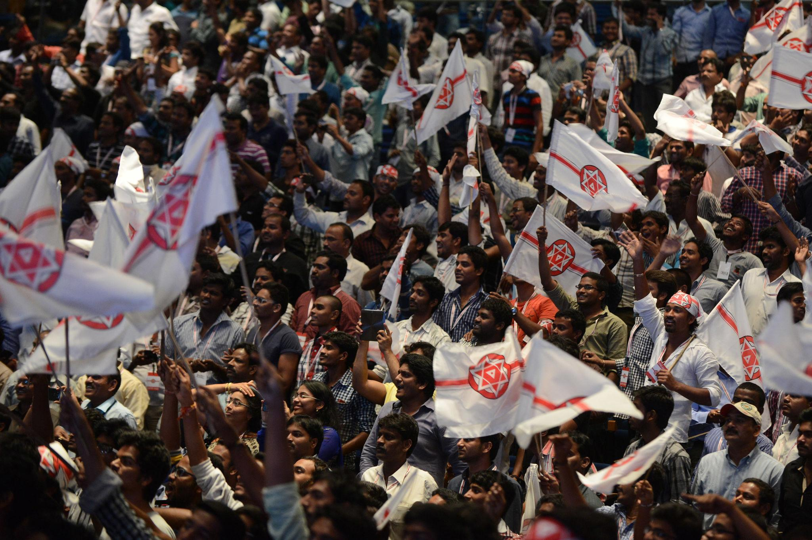

The Jana Sena Party (JSP) is a regional political party in India founded by actor, philanthropist, and politician Pawan Kalyan on 14 March 2014 in Hyderabad. The party was established with the aim of bringing transparency, accountability, and ethical values into the Indian political system. The name “Jana Sena” translates to “People’s Army” ,symbolizing a movement created to represent the voices, aspirations, and rights of ordinary citizens. Since its formation, the party has focused on addressing public issues, promoting democratic values, and encouraging active participation of youth in politics. The creation of the Jana Sena Party came at an important political moment when the state of Andhra Pradesh was undergoing major changes due to the formation of Telangana as a separate state. During this time, many citizens felt the need for strong leadership that would protect the interests of the people and ensure balanced development. Pawan Kalyan launched the party to raise awareness about social issues and to encourage political responsibility among leaders and citizens. His speeches during the party’s launch emphasized the importance of justice, equality, and honest governance in public administration. The Jana Sena Party primarily operates in the Telugu-speaking states of Andhra Pradesh and Telangana and aims to create a political platform that prioritizes the welfare of the common people. The party focuses on issues such as farmers’ welfare, employment opportunities for youth, social justice, anti-corruption measures, and transparent governance. It also encourages citizens to actively participate in democratic processes and hold leaders accountable for their actions. By promoting ethical leadership and responsible decision-making, the party aims to strengthen democracy and improve governance in the region. Under the leadership of Pawan Kalyan, the party has gained significant support among young people and followers who admire his commitment to public service and social responsibility. Many supporters view the Jana Sena Party as a platform for change and a voice for the marginalized sections of society. The party’s official symbol, the glass tumbler, represents transparency, clarity, and honesty in politics. The symbol reflects the party’s belief that governance should be open and accountable to the public. Since its formation, the Jana Sena Party has actively participated in political campaigns, public meetings, and election activities. The party has collaborated with other political parties in certain elections while continuing to promote its core values and vision for development. Through various public programs, social initiatives, and political movements, the party aims to create awareness about social issues and encourage responsible leadership in government. Over the years, the Jana Sena Party has become an influential regional political force that seeks to represent the aspirations of the people and contribute to the development of society.
Pawan Kalyan is an Indian actor, philanthropist, and politician who founded the Jana Sena Party. He was born on 2 September 1971 in Bapatla. His original name is Konidela Kalyan Babu. He is the younger brother of popular Telugu actor Chiranjeevi. Pawan Kalyan became widely known in the Telugu film industry for his unique acting style and strong fan following among young audiences. Apart from his film career, Pawan Kalyan has always shown interest in social issues and public welfare. He started several charitable activities through his organization called Common Man Protection Force, which focuses on helping people during natural disasters and supporting social causes. Through these activities, he developed a strong connection with the public and became known as a leader who speaks openly about social problems. Pawan Kalyan entered politics with the aim of bringing ethical values and transparency into governance. He believed that politics should focus on the welfare of ordinary citizens rather than personal interests. His speeches often highlight the importance of youth participation, responsible leadership, and accountability in government. Because of his strong public image and dedication to social issues, many young people consider him an inspiration and support his political vision. As the founder and president of the Jana Sena Party, Pawan Kalyan leads the party’s political activities, election campaigns, and public programs. His leadership focuses on issues such as farmers’ welfare, employment opportunities, development of infrastructure, and social justice. Over the years, he has built a strong political presence in the Telugu states and continues to promote democratic values and public service. Jana Sena Party was officially formed on 14th March 2014 in Hyderabad by Pawan Kalyan. The announcement was made during a public meeting where he delivered an important speech explaining the reasons for creating a new political party. The launch event attracted significant public attention and media coverage because of Pawan Kalyan’s popularity and the expectations surrounding his political entry. The formation of the party happened during a crucial political period when the Indian Parliament passed the Andhra Pradesh Reorganisation Act, 2014, which resulted in the division of the state into Andhra Pradesh and Telangana. During this time, many citizens were concerned about development, employment, and the future of both states.Pawan Kalyan stated that his party would work to protect the interests of the people and ensure fair development for all regions. During the party launch speech, Pawan Kalyan emphasized that the Jana Sena Party would stand for honesty, transparency, and accountability in politics. He encouraged citizens, especially young people, to participate actively in democratic processes and to question corruption and injustice. The party aimed to create a political platform where the voices of ordinary citizens could be heard. The party later received its official recognition from the Election Commission of India, and the election symbol “Glass Tumbler” was allotted to it. The symbol represents clarity and transparency in governance. Since its formation, the Jana Sena Party has participated in elections and political alliances in Andhra Pradesh and Telangana while promoting its vision of responsible leadership and social development. The formation of the Jana Sena Party marked the beginning of a new political movement aimed at addressing public concerns and promoting ethical governance. Over time, the party has expanded its political activities, organized public meetings, and encouraged people to engage in discussions about development, justice, and democratic values.
The Jana Sena Party (JSP) follows a political ideology that focuses on social justice, transparency in governance, and the empowerment of common people. The party was founded by Pawan Kalyan with the belief that politics should serve the interests of ordinary citizens rather than powerful individuals or groups. The main vision of the party is to create a political system where leaders work responsibly, corruption is reduced, and government policies are designed to improve the lives of the people. One of the core principles of the Jana Sena Party is transparent governance. The party believes that citizens have the right to know how decisions are made and how public resources are used. Transparency helps build trust between the government and the people. The party symbol, the glass tumbler, represents clarity and openness in politics, reflecting the party’s commitment to honest administration and accountability in public service. Another important ideology of the party is social equality and justice. The Jana Sena Party supports policies that aim to reduce social inequality and improve opportunities for marginalized communities. The party emphasizes equal rights, fair treatment, and access to education, healthcare, and employment for all citizens regardless of their social or economic background. It also encourages the protection of human rights and the promotion of inclusive development. The party strongly promotes youth empowerment. According to its leadership, young people play a crucial role in shaping the future of the country. The Jana Sena Party encourages youth to participate in political discussions, social activities, and democratic decision-making processes. By involving educated and socially aware youth in governance, the party believes that innovative ideas and progressive reforms can be introduced into the political system. The welfare of farmers and rural communities is another major objective of the party. Agriculture is an important part of the economy in Andhra Pradesh and Telangana, where the party mainly operates. The Jana Sena Party supports policies that provide better irrigation facilities, fair prices for agricultural products, financial assistance for farmers, and modern technology to improve farming practices. The party believes that strengthening the agricultural sector will help improve the overall economic stability of the region. The party also emphasizes the importance of education and employment opportunities. It advocates for improvements in the quality of education and skill development programs so that young people can gain better job opportunities. The party encourages the growth of industries, startups, and technology sectors that can create employment and support economic development. Another objective of the Jana Sena Party is to promote ethical leadership and responsible governance. The party believes that political leaders should act with integrity, honesty, and dedication to public service. It encourages leaders to listen to citizens’ concerns and make decisions that benefit society as a whole rather than focusing on personal gain or political advantage. The Jana Sena Party also supports national unity and democratic values. It believes in strengthening democratic institutions, protecting the constitution, and ensuring that citizens’ voices are heard in the decision-making process. By encouraging public participation and accountability, the party aims to build a stronger and more inclusive democratic system. Overall, the ideology and objectives of the Jana Sena Party are centered on public welfare, transparency, equality, youth participation, and sustainable development. Through its policies and political activities, the party aims to address social challenges, support economic growth, and create a governance system that reflects the aspirations and needs of the people.
Since its formation in 2014, the Jana Sena Party (JSP) has gradually expanded its political activities and participation in elections in the Telugu-speaking states of Andhra Pradesh and Telangana. Under the leadership of Pawan Kalyan, the party has organized political campaigns, public meetings, and awareness programs to connect with citizens and address their concerns. The party’s political activities focus on promoting transparency, accountability, and development-oriented governance. During the 2014 general elections in India, the Jana Sena Party did not contest directly but extended support to the Bharatiya Janata Party and the Telugu Desam Party. Pawan Kalyan campaigned in several areas to support these parties, emphasizing the importance of stable governance and development. His campaign speeches attracted large crowds and increased public awareness about political participation. In the 2019 Andhra Pradesh Legislative Assembly elections, the Jana Sena Party decided to contest independently in many constituencies. The party fielded several candidates across the state, including Pawan Kalyan himself. Although the party did not win many seats, it succeeded in gaining public attention and establishing itself as a growing political force in the region. The party won one seat in the Andhra Pradesh Legislative Assembly, and its vote share demonstrated that it had begun to build a loyal support base. The party has also been active in raising issues related to farmers, unemployment, infrastructure development, and public welfare. Through protests, public meetings, and social campaigns, the Jana Sena Party has attempted to highlight the concerns of citizens and encourage government accountability. Pawan Kalyan frequently visits different regions to interact with people, listen to their problems, and discuss possible solutions. In later political developments, the Jana Sena Party formed alliances with other political parties to strengthen its position in elections and increase its influence in policy-making. These alliances aimed to promote cooperative governance and bring attention to regional development issues. The party continues to expand its organizational structure and political outreach by encouraging volunteers and supporters to participate in social and political activities. Apart from elections, the Jana Sena Party is also involved in various social awareness campaigns and public service initiatives. These include programs related to disaster relief, social justice, environmental awareness, and public welfare. Through these activities, the party attempts to maintain close contact with citizens and promote community development. Overall, the election participation and political activities of the Jana Sena Party reflect its goal of becoming a significant political force that represents the interests of the people. By participating in elections, organizing campaigns, and raising awareness about social issues, the party aims to contribute to democratic governance and regional development in Andhra Pradesh and Telangana.
Since its establishment in 2014, the Jana Sena Party (JSP) has gradually grown as a political movement representing the interests of common people in the Telugu-speaking states of Andhra Pradesh and Telangana. Under the leadership of Pawan Kalyan, the party has gained significant attention for raising public issues and encouraging political awareness among citizens. Although the party is relatively young compared to other political parties in India, it has achieved recognition and built a strong support base among youth and social activists. One of the major achievements of the Jana Sena Party has been its ability to mobilize public support and encourage people to participate in democratic discussions. Through public meetings, political campaigns, and social media outreach, the party has created awareness about governance, corruption, and citizens’ rights. Many young people have joined the party as volunteers and supporters, strengthening its grassroots presence. The party has also played a role in highlighting important issues such as farmers’ welfare, unemployment, infrastructure development, and public safety. Through speeches, protests, and political campaigns, the party leadership has raised concerns about the challenges faced by ordinary citizens. These activities have helped bring several social and economic issues to public attention and encouraged discussions about policy reforms. Another notable achievement of the Jana Sena Party is its participation in elections and its growing influence in regional politics. By contesting elections and forming alliances with other political parties, the party has expanded its political presence. Even though electoral success has been gradual, the party continues to build its organizational structure and strengthen its political strategies. Apart from politics, the party and its supporters have also participated in various social service activities, including disaster relief efforts and public awareness campaigns. These initiatives aim to support communities during difficult times and promote social responsibility among citizens.
Pawan Kalyan – Founder of Jana Sena Party
Jana Sena Party Flag
Party Symbol – Glass Tumbler

Jana Sena Party Public Meeting